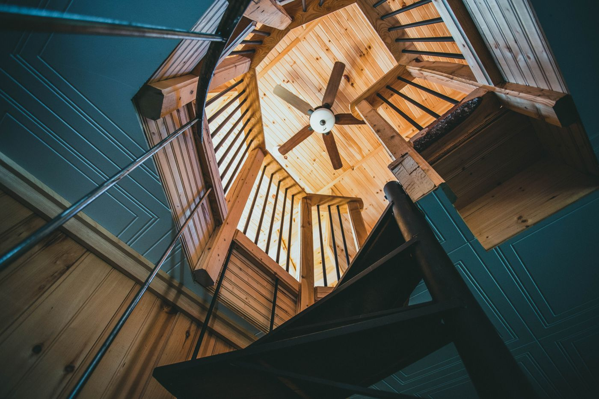

Quick answer: Choosing a custom home builder comes down to six things: a current NSW contractor licence (verified on the Fair Trading register, not taken on trust), a portfolio with projects comparable in scale and site complexity to yours, references you have actually called and asked the right questions, a contract structure you understand before you sign it, clarity on who will be present on your site day to day, and a builder who can explain — clearly and without deflection — how they handle variations. Everything else is presentation.
The custom home building industry produces one thing every builder manufactures in abundance, regardless of their other capabilities: an excellent first meeting. The presentation is polished, the renders are beautiful, and the principal explains their philosophy with what appears to be genuine conviction.
[Right. Straight face now.] The meeting is not the product. The house is. This guide covers the things that distinguish builders before the slab is poured — and the things that only reveal a builder’s true quality after handover, when it is too late to act on them.
- Know what “custom” actually means
- Check the licence before the brochure
- Assess the portfolio properly
- Ask for references — then actually call them
- Understand the contract before you sign
- Red flags in meetings
- Get three quotes — and compare them correctly
- When not to use a custom builder
- Six questions to ask every builder
- FAQ
Know What “Custom” Actually Means
Not every builder using the word “custom” designs homes from scratch. The word has been stretched to cover a spectrum from “we let you choose the facade tile” to “we start with your brief and a blank page.” Before you evaluate any builder, clarify where on that spectrum they sit.
Project builders work from a pre-designed catalogue of floor plans with a defined options list. Facade options, internal colour schemes, fixture upgrades — all within the catalogue. Fast to approve because the designs are pre-documented. Lower cost per square metre on uncomplicated flat blocks.
Semi-custom builders start from a catalogue but allow more significant modifications: wall relocations, room additions, structural changes. More flexible than a project home, still constrained by the base design logic.
Fully custom builders start from your brief and your site. Every decision — floor plan, structural system, ceiling heights, material specification — is made for your specific project. Higher overhead. More expensive per square metre. The right choice when the site or brief cannot be served by any catalogue.
The simplest test: ask the builder to describe their design process for a client with an irregular-shaped block, a steep slope, or a heritage constraint. A fully custom builder will describe how they respond to the site. A semi-custom builder will redirect to base plans that “can be adapted.” Both answers are honest. The question is which one matches your project.
For a breakdown of which builder type suits which Sydney context, see our guides on custom home builders on the North Shore and custom home builders in Western Sydney, which cover the site and planning conditions that drive the choice.
Check the Licence Before the Brochure
In NSW, anyone carrying out residential building work valued over $5,000 must hold a contractor licence from NSW Fair Trading. This is not a formality — it is the legal baseline. Check it before the first meeting, not after three good conversations and a deposit discussion.
Go to the NSW Fair Trading contractor licence register and search the builder’s business or trading name. Confirm four things:
- The licence is current — not suspended, lapsed, or under conditions
- The licence class covers the work — typically “contractor licence — builder” for residential construction
- The licence is held by the legal entity signing your contract — not an individual who may no longer be with the company
- There are no adverse conditions or notations on the licence
Also search the NCAT Decisions database for the builder’s name. A single appearance in a defect or non-completion proceeding is not automatically disqualifying — disputes happen. A pattern of appearances across multiple clients, or a finding of serious misconduct, is a different matter entirely. This search is free and takes five minutes.
A builder who reacts badly to being told you have checked their licence has told you something useful.
Assess the Portfolio Properly

Photo via Pexels
Most portfolio pages show beautiful photography of completed projects. None show what the build looked like at frame stage, how the builder responded when a subcontractor delivered defective work, or what the home looks like three years after handover. A portfolio shows you what a builder wants you to see. Your job is to look past it.
What to look for in a portfolio:
- Projects in the same LGA as your site. Council familiarity is a genuine advantage — builders who have completed DA applications with a council understand its assessment officers, its interpretation of the DCP, and its typical negotiating positions. This is not trivial.
- Projects comparable in scale and specification to yours. A builder whose portfolio is built around $1.5M homes may not have the supply chain, subcontractor relationships, or quality management system required for a $3M architectural build.
- Projects from at least two to three years ago. Handover photography looks good on every project. Three years reveals whether the tiling is still properly grouted, whether the windows seal properly, and whether the builder responded to the defects liability claims they received.
- Heritage or complex site projects, if your brief requires them. Experience on a standard flat block does not transfer to a sloping heritage-affected site. Ask specifically.
If the builder cannot show you completed projects comparable to yours, that is information. A portfolio of renders and under-construction photographs means you are being asked to extrapolate. Do so with appropriate scepticism.
Ask for References — Then Actually Call Them
Most builders will provide references when asked. The majority of buyers receive them and do not call. Among those who call, most ask the wrong questions.
Call every reference. Ask these questions specifically:
- Was the handover date met? If not, by how long and what was the explanation?
- How many variations were issued during the build, and were they all priced and authorised in writing before work proceeded?
- Who was your primary contact during construction — the director you met, a project manager, or an administrator? Did that person visit the site regularly?
- Did anything go wrong? How was it identified, and how quickly was it resolved?
- Would you use the same builder again — without hesitation? The pause before “yes” is as informative as the answer.
- Has anything emerged in the 12 months since handover, and how did the builder respond?
The sixth question is the most revealing. The defects liability period in NSW is typically six months after practical completion. How a builder handles the defects claims they receive — with promptness and goodwill or with delay and deflection — tells you more about their character than anything in the presentation. Ask every reference this question.
A builder who provides references reluctantly, or whose references are all from more than four years ago, is providing information. Act on it.
Understand the Contract Before You Sign
Photo via Pexels
Two standard residential building contracts dominate NSW: the HIA (Housing Industry Association) contract and the MBA (Master Builders Association) contract. Both are well-established, fair to both parties, and widely understood by builders, lawyers, and certifiers. If a builder insists on their own proprietary contract instead, ask why and have a solicitor read it carefully before you proceed.
Key clauses to understand before signing:
Fixed price vs cost-plus. A fixed-price contract gives you certainty — the builder carries the risk of cost increases within the agreed scope. A cost-plus contract passes that risk to you but can be appropriate for projects where the full scope cannot be defined at the outset. For most residential projects with documented design drawings, a fixed-price contract is appropriate. If a builder is quoting cost-plus on a fully documented design, ask why.
Variation clause. This is the clause that matters most in practice. Every custom build has variations. The question is who authorises them, on what basis, and when. Variations should be priced and documented in writing before work proceeds — not agreed verbally on site and reconciled at the end. Read this clause carefully. If it allows the builder to proceed with variations on verbal instruction, rewrite it or walk away.
Progress payment milestones. Standard NSW residential milestones are: deposit (typically 5–10%), base/slab, frame, lock-up, fixing, and practical completion. Avoid contracts that front-load payments significantly above these milestones — they shift risk to you in the event of a builder insolvency.
Defects liability period. Standard in NSW is six months from practical completion. This is the period during which the builder is obliged to rectify defects at their cost. Understand what is covered and what process is required to lodge a defects claim.
For projects over $1M, have a solicitor review the contract before execution. The cost is $500–$1,500. Against a bad variation clause on a $2M project, that cost is not worth discussing.
Red Flags in Meetings

Photo via Pexels
This section is the one most guides skip. We are not most guides.
A first meeting with a builder is a two-way assessment. Here are the things that should prompt serious pause — not necessarily disqualification, but a longer conversation before you proceed.
- They show you a catalogue before asking about your site. A builder who leads with a product rather than a question has already told you their process is not site-driven.
- They are vague about site supervision. “We have a team” is not an answer to “who will be on my site day to day?” Ask for the name and ask to meet that person before signing.
- They cannot name their key subcontractors. A builder who has been operating for five or more years has established relationships with structural framers, glaziers, electricians, and plumbers. If they cannot name them or are evasive about them, it suggests a transactional approach to subcontracting rather than long-term quality relationships.
- Their quote is materially lower than every other quote. A quote 15–20% below two comparable quotes is not a bargain until you understand exactly which line items create the difference. Ask them to walk through it. Aggressive provisional sums, excluded items, or a lower-specification inclusion schedule will account for most gaps. If the builder cannot or will not explain it in detail, the gap is in the exclusions.
- They create urgency. “We only have one slot available,” “this pricing is only valid until Friday,” “I can offer a discount if you commit this week.” A builder confident in their work and their pipeline does not need urgency tactics. A builder who uses them needs your commitment before you have done your homework.
- References are provided reluctantly. The right builder provides three current client contacts without any hesitation. Any reluctance — suggesting older references, offering testimonials instead of contact details, needing to “check first” — is a reason to continue asking.
Get Three Quotes — and Compare Them Correctly
Three quotes is the standard recommendation. The problem is that custom home quotes are not always comparing the same thing — and assuming they are is one of the most expensive mistakes in the selection process.
Before comparing any quotes, align these four variables across all three:
- Design documentation. If you have architect’s drawings and a specification, all builders should price from the same set. A quote based on a sketch will be cheaper than one based on a fully documented design — not because the builder is better, but because the documentation left out the expensive decisions.
- Inclusion schedule. What fixtures, finishes, appliances, windows, and insulation are included at the quoted rate? The inclusion schedule is where the difference between a $2.5M quote and a $2.1M quote often lives.
- Provisional sums. A provisional sum is an allowance for an item where the final cost is uncertain at tender — landscaping, kitchen joinery, tiling, pool. A low PS on a well-specified brief will blow out during construction. Compare PS allowances explicitly and ask each builder to justify their figures.
- Contract type and payment milestones. A cost-plus contract and a fixed-price contract are not comparable on price. Make sure you are comparing the same risk allocation.
Once those variables are aligned, a remaining price difference has a real explanation. Finding it before you commit is the point of getting three quotes. Our posts on custom home builders in Carlingford and custom home builders on the Northern Beaches both cover what realistic cost ranges look like in those markets, which gives useful context for assessing quotes.
When Not to Use a Custom Builder
This section is the one most custom builder guides omit entirely. Here is the honest version.
Do not use a custom builder if your site is flat, rectangular, and free of any planning complications, and your brief is a standard four-bedroom home with open-plan living and a double garage. A project or semi-custom builder will deliver a comparable result faster, with a clearer price, and without the overhead that the fully custom process carries. The custom premium is justified by complexity — if there is no complexity, you are paying for something you are not using.
Do not use a custom builder if your construction budget is under $600,000 in NSW. The economics of the full custom process — dedicated project management, architect coordination, bespoke procurement, quality control at every stage — require a minimum project scale to function properly. Below that threshold, the overhead compresses the builder’s margin to a point where something gives.
Do not use a custom builder if you need to be in the house within 14 months and your site requires a DA. Design, DA, Construction Certificate, and construction together take longer than 14 months on most established Sydney sites. No builder can change this, and a builder who promises it without caveats is not being straight with you.
Do not use a custom builder if you cannot commit time to the design and selection process. Custom builds require client decisions at regular intervals across 3–5 months of design documentation. If those decisions stall, the programme stalls, and the cost of that delay arrives on your progress claims without warning.
Six Questions to Ask Every Builder
Ask these in the first meeting. How a builder responds to each one tells you as much as the answers themselves.
- Can I verify your NSW contractor licence number? Provide the number so I can confirm it on the Fair Trading register. A builder who hesitates or redirects has given you an answer.
- Do you carry current home building compensation insurance for the value of this project? NSW requires HBC cover for residential contracts over $20,000. Ask for evidence of the current policy certificate before contracts are signed.
- Who will be my primary contact and on-site supervisor during construction — and can I meet them before we sign? The person who presents the business and the person who runs your site day to day are not always the same. Know which one you are getting.
- Can I have contact details for three recent clients from projects comparable in scale and site type to mine? Ask for contacts, not testimonials. Then call them.
- Walk me through your variation process. How is a variation identified? How is it priced? What authorisation is required before work proceeds? Can I see the variation clause in your proposed contract?
- What is your current project pipeline, and when realistically would construction begin? A builder who can start immediately in a busy market warrants a question. A builder with a six-month forward programme is usually a builder whose current clients are not complaining.
Six questions. Not unreasonable for a commitment of $1.5M to $3M. A builder who handles all six directly, without deflecting or shortening, is showing you something about how they operate. A builder who finds three of them uncomfortable is also showing you something.
FAQ
How do I choose a good custom home builder in Sydney?
Verify the builder’s NSW contractor licence on the Fair Trading register before the first meeting. Review their portfolio for projects comparable in scale and site complexity to yours. Call at least three references and ask specifically about timeline adherence, variation handling, and post-handover defect response. Have a solicitor review the contract before signing. The meeting is the audition; the contract is the commitment.
What should I ask a custom home builder?
Ask: Can I verify your licence number on the Fair Trading register? Do you carry current home building compensation insurance? Who will be my primary contact and on-site supervisor during construction? Can I speak with three recent clients from comparable projects? How do you price and authorise variations? What contract type do you use and why? A builder who handles all six questions directly and without deflection is showing you something about how they operate.
What is the difference between a custom home builder and a project builder?
A project builder works from a pre-designed catalogue of floor plans that can be modified within a fixed options list. A custom builder designs your home from scratch — from your brief, your block, and your constraints. Nothing in a custom design predates your project. Custom builders are worth the premium on complex sites, heritage-affected land, or briefs that cannot be satisfied by any catalogue. On a flat, rectangular, uncomplicated block with a standard brief, a project builder often delivers comparable value at materially lower cost.
How do I verify a builder’s licence in NSW?
Search the NSW Fair Trading contractor licence register using the builder’s trading or business name. Confirm the licence is current, covers the relevant licence class (typically “contractor licence — builder”), and is held by the legal entity that will sign your contract. Also search the NCAT Decisions database for domestic building disputes — a pattern of appearances across multiple clients is more telling than any single case.
What contract type should a custom home builder use?
In NSW, the two standard residential contracts are HIA and MBA. Both are fair and well-established. For most residential custom builds with documented design drawings, a fixed-price contract is appropriate. The key clauses to understand are the variation clause, the progress payment milestones, and the defects liability period. For projects over $1M, have a solicitor review the contract before execution. The cost of that review is $500–$1,500. Against a bad variation clause on a $2M build, that cost is not worth discussing.
What are the red flags when choosing a custom home builder?
Key red flags: showing a catalogue before asking about your site; vagueness about who manages the project day to day; reluctance to provide recent client references; a quote materially lower than competitors without a clear explanation of the line items that create the difference; pressure to commit quickly; and an inability to name the key subcontractors they use. A quote 15–20% below two comparable quotes is information, not a bargain, until you understand exactly where the gap is.
How many quotes should I get from a custom home builder?
Three. Enough to understand the market rate without making comparison unmanageable. The critical discipline: ensure all three builders are quoting from the same design documentation, inclusion schedule, and provisional sum assumptions before you compare prices. A quote $150,000 lower than two others is not a saving until you identify the specific line items that create the difference. Ask the cheaper builder to walk through the gap explicitly and in writing.